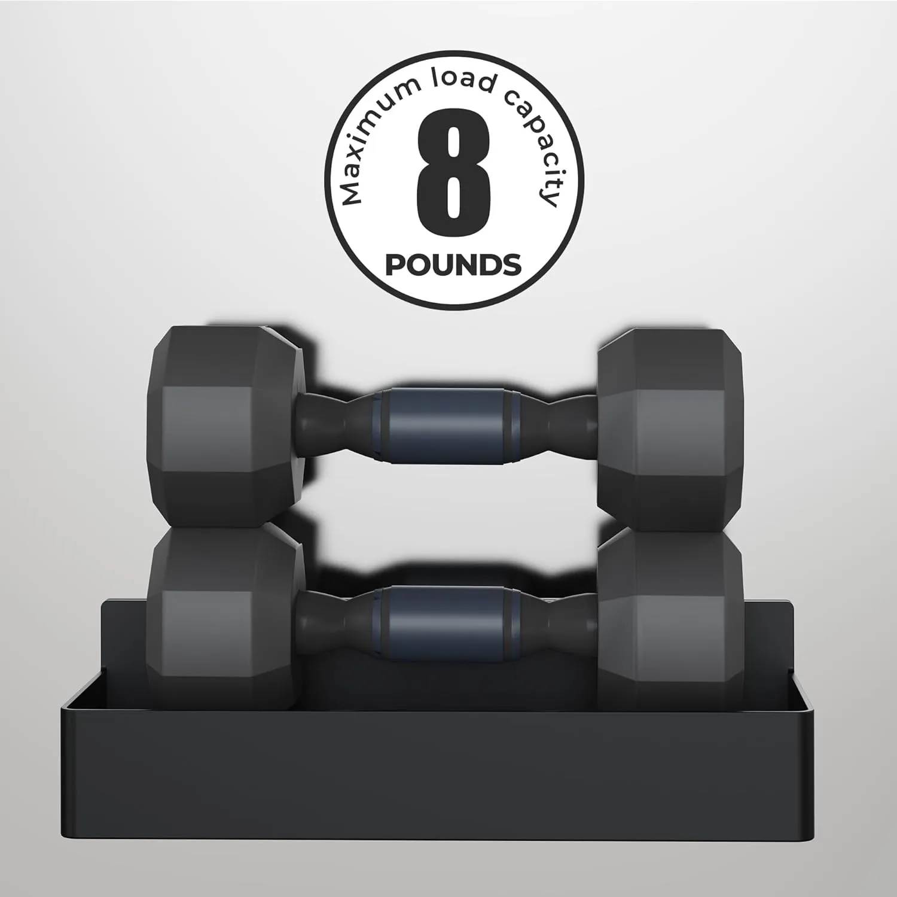
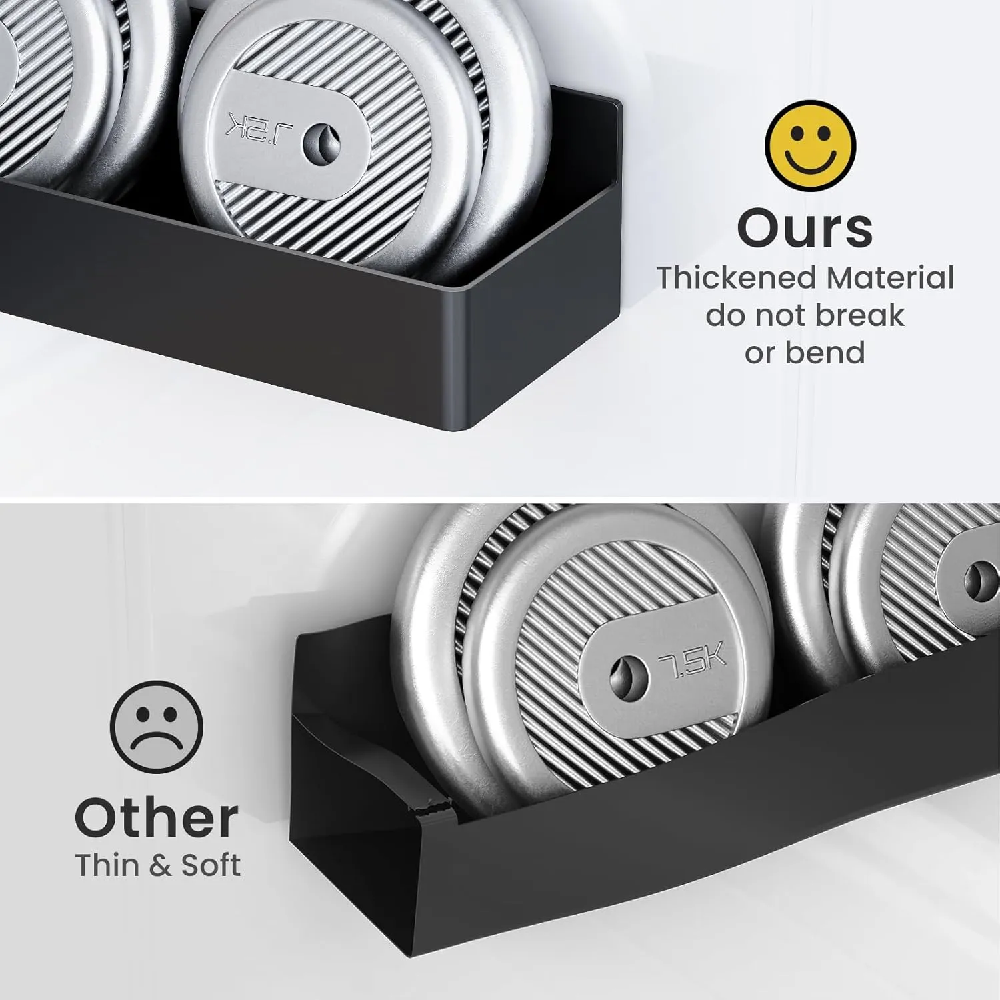

The fridge side storage trick most small kitchens need.
You open the cabinet looking for paprika and end up moving six jars, a bottle of olive oil, and the coffee syrup just to find it. A magnetic spice rack turns the empty side of your refrigerator into everyday storage space without drilling holes or stealing counter room.
Most kitchens do not need more cabinets. They need smarter surfaces.
In a small kitchen, the problem is rarely one messy drawer. It is the way everyday items spread everywhere: spices on the counter, bottles near the stove, seasoning packets in a random bin, and cabinet shelves too full to see what is inside.
A magnetic spice rack works because it uses a surface many people ignore — the side of the refrigerator. That empty metal wall can become a place for spices, oils, sauces, wraps, coffee items, or small pantry overflow.

Small items steal more space than you think.
A few spice jars do not look like a big deal until they start spreading across three cabinets, the stove area, and the counter. The clutter feels small, but it slows down weeknight cooking.
It starts with one bottle near the stove.
Most busy kitchens collect little temporary storage spots. Salt sits near the burner. Garlic powder stays by the cutting board. Olive oil lives wherever it fits. The hot sauce never goes back in the cabinet because someone will use it again tomorrow.
That setup works for a day or two. Then the kitchen starts looking crowded even when it is technically clean. The counter is wiped down, but it still feels busy because everyday items have no real home.
This is where fridge-side storage helps. It keeps the items you reach for all the time visible, vertical, and off the counter. You are not adding a bulky shelf or a rolling cart. You are turning dead space into useful space.

No screws. No tools. No weekend project.
A lot of kitchen organization ideas look good online but become annoying in real life. You have to mount something, measure a wall, drill into a cabinet, or hope your landlord does not care.
This magnetic rack skips that whole project. If the side of your refrigerator is metal and has enough flat space, the rack can sit there without permanent installation. That makes it especially useful for renters, college apartments, small condos, and anyone who does not want another simple project turning into a hardware store run.
It also lets you test the layout. Put spices on one rack, sauces on another, coffee items on a third, and snacks or small bottles on the fourth. If the setup feels wrong, move it. That flexibility is a bigger deal than it sounds.
- Works best on a clean, flat metal refrigerator side.
- Good for spice jars, small bottles, packets, wraps, coffee syrups, and kitchen overflow.
- Useful when cabinet space is limited but wall mounting is not an option.

Not just for spices.
The obvious use is seasonings, but the best setups usually mix a few high-use kitchen items together.
Keep salt, pepper, garlic powder, oil spray, hot sauce, and quick seasonings close to the stove.
Use one rack for sweeteners, syrups, filters, tea bags, or small coffee accessories.
Store small jars, packets, snack toppings, seasoning mixes, or items that usually disappear in deep cabinets.
Add storage without installing shelves or buying a cart that takes up floor space.
Keep your go-to seasonings and sauces visible so Sunday prep does not turn into cabinet digging.
The same idea can work for small bottles, cleaning items, or odds and ends on a metal washer or utility surface.
Make sure your fridge is the right surface.
Magnetic storage is simple, but it still depends on the surface. Some stainless-look refrigerators are not magnetic on the front, while the side panel may work better. Some kitchens have the fridge tucked against a wall with no side access.
Before buying any magnetic rack, check the exact spot where you want it. Test it with a fridge magnet if you are not sure. Also think about clearance. If the fridge sits beside a doorway, cabinet, or tight walkway, you do not want the rack sticking out where people bump into it.
Used in the right spot, though, this is one of the easiest kitchen upgrades because it does not require a remodel, a new pantry, or extra counter space.

Why this 4-pack setup is useful.
The strength of this organizer is the mix of simple installation, flexible placement, and enough rack space to build a real storage zone.
Attaches to refrigerator doors or other suitable metal surfaces without tools.
Gives you separate racks for spices, bottles, coffee items, or pantry overflow.
Moves small items up and out of the prep area so the kitchen feels cleaner.
Good for renters or anyone who wants organization without permanent installation.
It will not fix a chaotic kitchen by itself, but it solves one annoying part fast.
This is not a full pantry makeover. It will not magically organize every cabinet. What it does well is take the small items that keep floating around the kitchen and give them a visible, reachable place.
That matters because the best kitchen organization usually comes from small changes that actually stick. If spices are easier to grab, people are more likely to put them back. If bottles are not sitting on the counter, the whole kitchen looks calmer. If one side of the refrigerator becomes useful, you free up space somewhere else.
For many homes, that is enough to make the kitchen feel less crowded without buying a new cabinet, pantry shelf, or rolling cart.

A simple storage upgrade for kitchens that feel full too fast.
If your spices, sauces, and small bottles keep taking over the counter, this magnetic rack gives them a better place. It is especially useful for apartments, rentals, and busy kitchens where every inch of cabinet and prep space matters.
View on AmazonBefore adding magnetic storage to your kitchen.
Will it work on every refrigerator?
No. It needs a magnetic metal surface. Test the side of your fridge with a magnet first, especially if your appliance has a stainless-look finish.
Is this only for spices?
No. Spices are the obvious use, but it can also hold small bottles, packets, wraps, coffee items, sauces, or pantry overflow.
Is it good for renters?
Yes, that is one of the best use cases. You can add storage without drilling into cabinets, walls, or tile.
Where should I place it?
The side of the fridge usually works best. Avoid tight walkways or spots where the rack could be bumped when people pass through.
Can it help a small apartment kitchen?
Yes. It is most useful when counter space and cabinet space are limited, but you still want everyday items within reach.
What should I store on the top rack?
Put lighter items or the things you reach for less often up top, and keep daily-use seasonings or bottles at the easiest grabbing height.